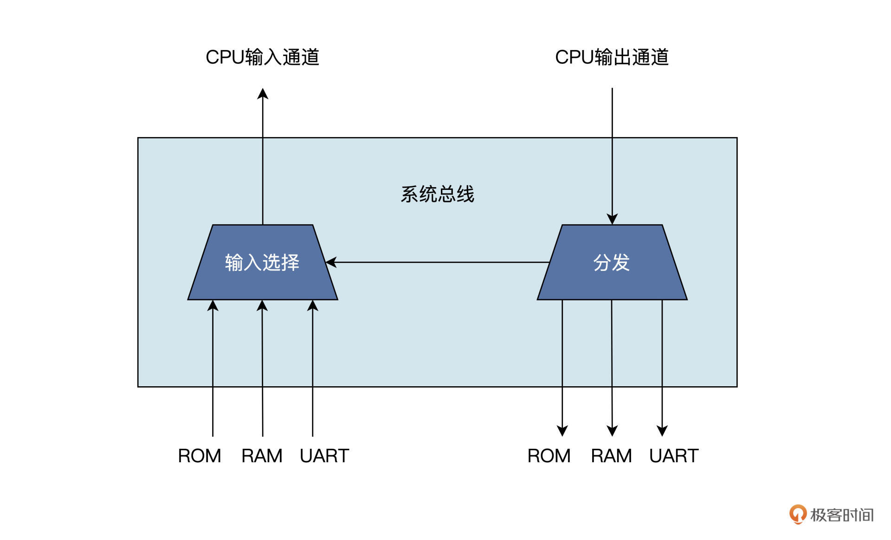
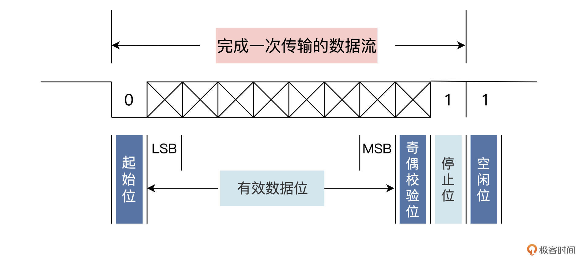
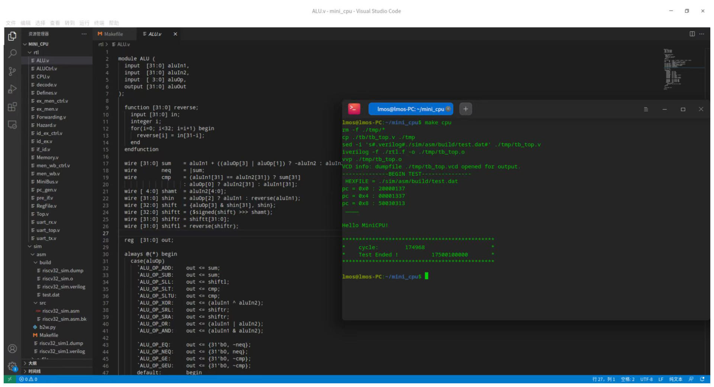
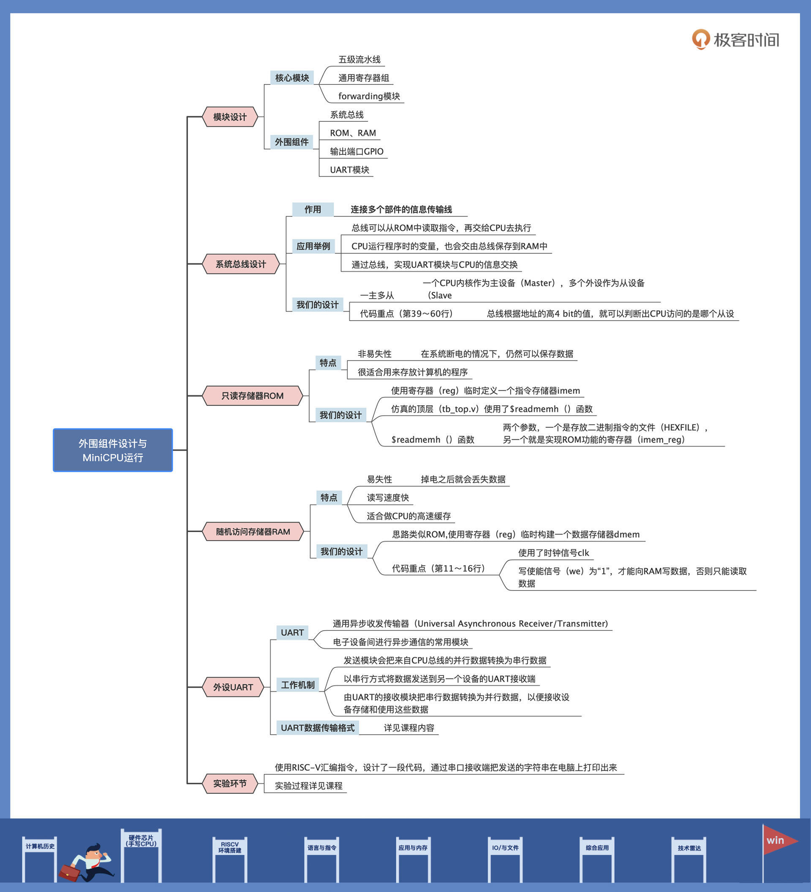

- 00 开篇词 练好基本功，优秀工程师成长第一步.md.html
- 01 CISC & RISC：从何而来，何至于此.md.html
- 02 RISC特性与发展：RISC-V凭什么成为“半导体行业的Linux”？.md.html
- 03 硬件语言筑基（一）：从硬件语言开启手写CPU之旅.md.html
- 04 硬件语言筑基（二）_ 代码是怎么生成具体电路的？.md.html
- 05 指令架构：RISC-V在CPU设计上到底有哪些优势？.md.html
- 06 手写CPU（一）：迷你CPU架构设计与取指令实现.md.html
- 07 手写CPU（二）：如何实现指令译码模块？.md.html
- 08 手写CPU（三）：如何实现指令执行模块？.md.html
- 09 手写CPU（四）：如何实现CPU流水线的访存阶段？.md.html
- 10 手写CPU（五）：CPU流水线的写回模块如何实现？.md.html
- 11 手写CPU（六）：如何让我们的CPU跑起来？.md.html
- 12 QEMU：支持RISC-V的QEMU如何构建？.md.html
- 13 小试牛刀：跑通RISC-V平台的Hello World程序.md.html
- 14 走进C语言：高级语言怎样抽象执行逻辑？.md.html
- 15 C与汇编：揭秘C语言编译器的“搬砖”日常.md.html
- 16 RISC-V指令精讲（一）：算术指令实现与调试.md.html
- 17 RISC-V指令精讲（二）：算术指令实现与调试.md.html
- 18 RISC-V指令精讲（三）：跳转指令实现与调试.md.html
- 19 RISC-V指令精讲（四）：跳转指令实现与调试.md.html
- 20 RISC-V指令精讲（五）：原子指令实现与调试.md.html
- 21 RISC-V指令精讲（六）：加载指令实现与调试.md.html
- 22 RISC-V指令精讲（七）：访存指令实现与调试.md.html
- 23 内存地址空间：程序中地址的三种产生方式.md.html
- 24 虚实结合：虚拟内存和物理内存.md.html
- 25 堆&栈：堆与栈的区别和应用.md.html
- 26 延迟分配：提高内存利用率的三种机制.md.html
- 27 应用内存管理：Linux的应用与内存管理.md.html
- 28 进程调度：应用为什么能并行执行？.md.html
- 29 应用间通信（一）：详解Linux进程IPC.md.html
- 30 应用间通信（二）：详解Linux进程IPC.md.html
- 31 外设通信：IO Cache与IO调度.md.html
- 32 IO管理：Linux如何管理多个外设？.md.html
- 33 lotop与lostat命令：聊聊命令背后的故事与工作原理.md.html
- 34 文件仓库：初识文件与文件系统.md.html
- 35 Linux文件系统（一）：Linux如何存放文件？.md.html
- 36 Linux文件系统（二）：Linux如何存放文件？.md.html
- 37 浏览器原理（一）：浏览器为什么要用多进程模型？.md.html
- 38 浏览器原理（二）：浏览器进程通信与网络渲染详解.md.html
- 39 源码解读：V8 执行 JS 代码的全过程.md.html
- 40 内功心法（一）：内核和后端通用的设计思想有哪些？.md.html
- 41 内功心法（二）：内核和后端通用的设计思想有哪些？.md.html
- 42 性能调优：性能调优工具eBPF和调优方法.md.html
- 先睹为快：迷你CPU项目效果演示.md.html
- 加餐01 云计算基础：自己动手搭建一款IAAS虚拟化平台.md.html
- 加餐02 学习攻略（一）：大数据&云计算，究竟怎么学？.md.html
- 加餐03 学习攻略（二）：大数据&云计算，究竟怎么学？.md.html
- 加餐04 谈谈容器云与和CaaS平台.md.html
- 加餐05 分布式微服务与智能SaaS.md.html
- 国庆策划01 知识挑战赛：检验一下学习成果吧！.md.html
- 国庆策划02 来自课代表的学习锦囊.md.html
- 国庆策划03 揭秘代码优化操作和栈保护机制.md.html
- 温故知新 思考题参考答案（一）.md.html
- 用户故事 我是怎样学习Verilog的？.md.html
- 结束语 心若有所向往，何惧道阻且长.md.html
- 捐赠
11 手写CPU（六）：如何让我们的CPU跑起来？
你好，我是LMOS。
通过前面几节课的学习，我们已经完成了MiniCPU五级流水线的模块设计，现在距离实现一个完整的MiniCPU也就一步之遥。
还差哪些工作没完成呢？还记得我们在第六节课设计的MiniCPU架构图吗？回想一下，我们已经设计完成的五级流水线，都包含下图的哪些模块？

上图的CPU核心模块，也就是CPU Core包含的模块的设计，这些我们已经在前面几节课里完成了。除了五级流水线的模块，我们还设计了用于保存操作数和运算结果的通用寄存器组，设计了解决数据冒险问题的forwarding模块，以及解决控制冒险问题的hazard模块。
接下来，我们还需要搞定一些外围组件，也就是图里虚线框外的系统总线、ROM、RAM、输入输出端口GPIO（GPIO比较简单，课程里没专门讲）和UART模块。
学完这节课，我们就可以把这个CPU运行起来了，最终我还会带你在这个CPU上跑一个RISC-V版本的Hello World程序（课程代码从这里下载），是不是很期待？话不多说，我们这就开始！
系统总线设计
首先，让我们看看CPU的系统总线。
总线是连接多个部件的信息传输线，它是各部件共享的传输介质。在某一时刻，只允许有一个部件向总线发送信息，而多个部件可以同时从总线上接收相同的信息。MiniCPU的系统总线用来连接CPU内核与外设，完成信息传输的功能。
系统总线在整个MiniCPU中是一个很关键的模块。你可以这样理解，总线就是CPU内核跟其他外设部件的“联络员”。举几个例子，总线可以从ROM中读取指令，再交给CPU去执行；CPU运行程序时的变量，也会交由总线保存到RAM中；用来实现芯片与外部通信的UART模块，也需要通过总线跟CPU进行信息交换……
那总线的代码具体要怎么设计呢？我先展示一下写好的整体代码，再带你具体分析。
module sys_bus (
// cpu -> imem
input [31:0] cpu_imem_addr,
output [31:0] cpu_imem_data,
output [31:0] imem_addr,
input [31:0] imem_data,
// cpu -> bus
input [31:0] cpu_dmem_addr,
input [31:0] cpu_dmem_data_in,
input cpu_dmem_wen,
output reg [31:0] cpu_dmem_data_out,
// bus -> ram
input [31:0] dmem_read_data,
output [31:0] dmem_write_data,
output [31:0] dmem_addr,
output reg dmem_wen,
// bus -> rom
input [31:0] dmem_rom_read_data,
output [31:0] dmem_rom_addr,
// bus -> uart
input [31:0] uart_read_data,
output [31:0] uart_write_data,
output [31:0] uart_addr,
output reg uart_wen
);
assign imem_addr = cpu_imem_addr;
assign cpu_imem_data = imem_data;
assign dmem_addr = cpu_dmem_addr;
assign dmem_write_data = cpu_dmem_data_in;
assign dmem_rom_addr = cpu_dmem_addr;
assign uart_addr = cpu_dmem_addr;
assign uart_write_data = cpu_dmem_data_in;
always @(*) begin
case (cpu_dmem_addr[31:28])
4'h0: begin //ROM
cpu_dmem_data_out <= dmem_rom_read_data;
dmem_wen <= 0;
uart_wen <= 0;
end
4'h1: begin // RAM
dmem_wen <= cpu_dmem_wen;
cpu_dmem_data_out <= dmem_read_data;
uart_wen <= 0;
end
4'h2: begin // uart io
uart_wen <= cpu_dmem_wen;
cpu_dmem_data_out <= uart_read_data;
dmem_wen <= 0;
end
default: begin
dmem_wen <= 0;
uart_wen <= 0;
cpu_dmem_data_out <= 0;
end
endcase
end
endmodule
这里我们设计的系统总线其实是一个“一对多”的结构，也可以说是“一主多从”结构，就是一个CPU内核作为主设备（Master），多个外设作为从设备（Slave）。- 
CPU内核具有系统总线的控制权，它可以通过系统总线，发起对外设的访问，而外设只能响应从CPU内核发来的各种总线命令。因此，每个外设都需要有一个固定的地址，作为CPU访问特定外设的标识。
以下就是给从设备分配的地址空间：
// 设备地址空间- // 0x0000_0000 -ROM (word to byte )- // 0x1000_0000 -RAM (word to byte )- // 0x2000_0000 -uart (word to byte )- // 0x3000_0000 -other(word to byte )
从代码的第39～60行也可以看到，总线根据地址的高4 bit的值，就可以判断出CPU访问的是哪个从设备。
当（cpu_dmem_addr[31:28] = 4’h0 ）时，CPU访问的是ROM，把从ROM返回的数据赋给总线；当（cpu_dmem_addr[31:28] = 4’h1 ）时，CPU访问的是RAM，把CPU的写使能cpu_dmem_wen赋给RAM的写使能信号dmem_wen，同时把从RAM返回的数据赋给总线；当（cpu_dmem_addr[31:28] = 4’h2 ）时，CPU访问的是串行通信模块UART，把CPU的写使能cpu_dmem_wen赋给uart的写使能信号uart_wen，同时把从UART返回的数据赋给总线。这就是MiniCPU总线的工作过程。
只读存储器ROM的实现
接下来，我们看看连接在总线上的存储器要如何实现。
ROM是个缩写，它表示只读存储器（Read Only Memory）。ROM具有非易失性的特点。什么是非易失性呢？说白了就是在系统断电的情况下，仍然可以保存数据。
正是因为这一特点，ROM很适合用来存放计算机的程序。由于历史原因，虽然现在使用的ROM中，有些类型不仅是可以读，还可以写，但我们还是习惯性地把它们称作只读存储器。比如，现在电子系统中常用的EEPROM、NOR flash 、Nand flash等，都可以归类为ROM。
在我们的MiniCPU中，目前没有真正使用上述的ROM作为指令存储器。让我们看看MiniCPU中实现ROM功能的代码，再相应分析我们的设计思路。
module imem (
input [11:0] addr1,
output [31:0] imem_o1,
input [11:0] addr2,
output [31:0] imem_o2
);
reg [31:0] imem_reg[0:4096];
assign imem_o1 = imem_reg[addr1];
assign imem_o2 = imem_reg[addr2];
endmodule
为了方便学习和仿真，我们使用了寄存器（reg）临时定义了一个指令存储器imem，并在仿真的顶层（tb_top.v）使用了$readmemh（）函数，把编译好的二进制指令读入到imem中，以便CPU内部读取并执行这些指令。这里我们设置的存储器在功能上是只读的。
以下就是仿真的顶层（tb_top.v）调用$readmemh（）函数的语句。
$readmemh(`HEXFILE, MiniCPU.u_imem.imem_reg);
函数里面有两个参数，一个是存放二进制指令的文件（HEXFILE），另一个就是实现ROM功能的寄存器（imem_reg）。这条语句可以在我们启动CPU仿真时，把二进制的指令一次性读入到imem中，这样CPU运行的过程中就可以取imem中的指令去执行了。
随机访问存储器RAM
除了存放指令的ROM，我们还需要一个存放变量和数据的RAM（Random Access Memory）。
RAM和特点跟ROM正好相反，它是易失性存储器，通常都是在掉电之后就会丢失数据。但是它具有读写速度快的优势，所以通常用作CPU的高速缓存。
RAM之所以叫做随机访问存储器，是因为不同的地址可以在相同的时间内随机读写。这是由RAM的结构决定的，RAM使用存储阵列来存储数据，只要给出行地址和列地址，就能确定目标数据，而且这一过程和目标数据所处的物理位置无关。
和ROM一样，为了方便对设计的MiniCPU进行仿真验证，我们还是用寄存器（reg）临时构建了一个数据存储器dmem，作为MiniCPU中的RAM使用。虽然临时构建的存储器和实际的ROM有点差别，但我们还在初期学习阶段，这已经足够了。
下面就是实现RAM功能的数据存储器dmem的代码：
module dmem(
input [11:0] addr,
input we,
input [31:0] din,
input clk,
output reg [31:0] dout
);
reg [31:0] dmem_reg[0:4095];
always @(posedge clk) begin
if(we) begin
dmem_reg[addr] <= din;
end
dout <= dmem_reg[addr];
end
endmodule
代码的第11~16行可以看到，我们使用了时钟信号clk，说明这里的dmem实现的是一个时钟同步RAM。而且当写使能信号（we）为“1”时，才能往RAM里写数据，否则只能读取数据。
外设UART设计
为了让MiniCPU能和其他电子设备进行通信，我们还要设计UART模块。
同样地，设计代码之前我先带你快速了解一下UART是什么，它的工作原理是怎样的。
UART的全称叫通用异步收发传输器（Universal Asynchronous Receiver/Transmitter），它是一种串行、异步、全双工的通信协议，是电子设备间进行异步通信的常用模块。
UART负责对系统总线的并行数据和串行口上的串行数据进行转换，通信双方采用相同的波特率。在不使用时钟信号线的情况下，仅用一根数据发送信号线和一根数据接收信号线（Rx和Tx）就可以完成两个设备间的通信，因此我们也把UART称为异步串行通信。
串行通信是指，利用一条传输线将数据按顺序一位位传送的过程。UART的发送模块会把来自CPU总线的并行数据转换为串行数据，再以串行方式将其发送到另一个设备的UART接收端。然后由UART的接收模块把串行数据转换为并行数据，以便接收设备存储和使用这些数据。
UART的数据传输格式如下图所示：

从图里我们可以看到，UART传输数据包括起始位、数据位、奇偶校验位、停止位和空闲位。UART数据传输线通常在不传输数据时保持在高电平。
这么多名词是不是有点应接不暇？我挨个解释一下，你就清楚了。
- 起始位是在数据线上先发出一个逻辑低电平“0”信号，表示数据传输的开始。
- 数据位是由5~8位逻辑高低电平表示的“1”或“0”信号。
- 校验位在传输的数据位的后面加1bit，表示“1”的位数应为偶数（偶校验）或奇数（奇校验）。
- 停止位是一个数据位宽的1倍、1.5倍、或者2倍的高电平信号，它是一次数据传输的结束标志。
- 空闲位是数据传输线处于逻辑高电平状态，表示当前线路上处于空闲状态，没有数据传送。
跟数据发送信号线TX、数据接收信号线RX相对应，我们的UART也分别设计了发送模块（uart_tx）和接收模块（uart_rx）。如果你想了解具体的功能实现，可以课后查看我们的MiniCPU的项目代码。
这里只放出来发送模块的端口信号，如下所示：
module uart_tx(
input clk , // Top level system clock input.
input resetn , // Asynchronous active low reset.
output uart_txd , // UART transmit pin.
output uart_tx_busy, // Module busy sending previous item.
input uart_tx_en , // Send the data on uart_tx_data
input [7:0] uart_tx_data // The data to be sent
);
UART接收模块的端口信号如下：
module uart_rx(
input clk , // Top level system clock input.
input resetn , // Asynchronous active low reset.
input uart_rxd , // UART Recieve pin.
input uart_rx_en , // Recieve enable
output uart_rx_break, // Did we get a BREAK message?
output uart_rx_valid, // Valid data recieved and available.
output reg [7:0] uart_rx_data // The recieved data.
);
端口信号的代码你结合上面的注释很容易就能理解，后面CPU跑程序的时候就会用到这部分的功能。
在CPU上跑个Hello World
好，现在来到我们的最后一个环节，编写程序，并把它放到我们的MiniCPU上跑起来。
为了能更直观看到CPU的运行效果，这里我们使用RISC-V汇编指令，设计了一段用UART发送“Hello MiniCPU!”字符串的代码，然后让串口接收端把发送的字符串在电脑上打印出来。
具体的代码如下：
# Assembly Description
main:
li x2, 0x20000000 # uart address
li x6, 0x1500 #x6 <== 0x1500, delay 1ms
addi x7, x0, 0 #x7 <== 0
addi x5, x0, 0x48 #x5 <== "H"
sw x5, 0(x2)
delay1: addi x7, x7, 1 #x7 <== x7 + 1
bne x7, x6, delay1 #x6 != x7
addi x7, x0, 0 #x7 <== 0
addi x5, x0, 0x65 #x5 <== "e"
sw x5, 0(x2)
delay2: addi x7, x7, 1 #x7 <== x7 + 1
bne x7, x6, delay2 #x6 != x7
addi x7, x0, 0 #x7 <== 0
addi x5, x0, 0x6c #x5 <== "l"
sw x5, 0(x2)
delay3: addi x7, x7, 1 #x7 <== x7 + 1
bne x7, x6, delay3 #x6 != x7
addi x7, x0, 0 #x7 <== 0
addi x5, x0, 0x6c #x5 <== "l"
sw x5, 0(x2)
………… //由于代码较长，结构相似，这里省略了一部分，完整代码你可以从Gitee上获取
delay13: addi x7, x7, 1 #x7 <== x7 + 1
bne x7, x6, delay13 #x6 != x7
addi x7, x0, 0 #x7 <== 0
addi x5, x0, 0x21 #x5 <== "!"
sw x5, 0(x2)
end: j end
ret
有了代码，我们还需要把它编译成能在CPU上运行的机器码，才能把它放在CPU上跑。
下面的代码就是放在课程代码中的Makefile，作用是编译汇编代码，还有定义好CPU仿真需要用到的一些命名规则。
SOURCE_TB := ./tb/tb_top.v
TMP_DIR := ./tmp
SOURCE := ./rtl.f
TARGET := ${TMP_DIR}/tb_top.o
TEST_HEX := ./sim/asm/build/test.dat
# 编译汇编程序，输出二进制指令
asm:
make -C ./sim/asm
python ./sim/asm/word2byte.py
# 对CPU进行仿真
cpu:
rm -f ${TMP_DIR}/*
cp ${SOURCE_TB} ${TMP_DIR}
sed -i 's#.hex#${TEST_HEX}#' ${TMP_DIR}/tb_top.v
iverilog -f ${SOURCE} -o ${TARGET}
vvp ${TARGET}
# 查看波形
wave:
gtkwave ${TMP_DIR}/tb_top.vcd &
# 清除临时文件
clean:
make -C ./sim/asm clean
rm ./tmp/* -rf
从Makefile的代码中可以看到，我们一共定义了4个目标命令，它们的作用分别是完成汇编程序编译的（asm）命令、执行MiniCPU仿真的（cpu）命令、用软件GTKwave打开仿真后的波形（wave）命令，以及清除仿真过程中产生的临时文件的（clean）命令。
通过在终端上执行“make asm”命令，便可以把上面设计的汇编程序编译成二进制指令test.dat。然后我们再输入“make cpu”命令就启动MiniCPU的仿真了，运行结果如下图所示：

到此，我们的MiniCPU就设计完成啦！祝贺你一路进行到这里。看到页面上输出Hello MiniCPU的时候，是不是感觉还挺好玩的？
如果你觉得意犹未尽，还可以在项目文件夹里的“./mini_cpu/sim/asm/src/miniCPU_sim.asm”这个文件中编写你自己的RISC-V汇编程序，然后就可以在我们的MiniCPU上玩出更多花样了。
重点回顾
这节课，我们把MiniCPU的几个外部模块设计完成，这几个模块是让CPU“跑起来”的必要组件。
我们首先设计了MiniCPU的系统总线。有了它，就能连接CPU内核与外设，完成信息传输的功能，相当于CPU内核与外部设备的一座桥梁。
接下来的模块就是ROM和RAM。ROM是存放CPU指令的只读存储器。为了方便学习和仿真，我们通过寄存器临时定义了一个指令存储器，然后在仿真的顶层使用了$readmemh函数，把编译好的二进制指令读入到指令存储器中，这样CPU运行时就可以读取和执行这些指令了。
RAM用来存放数据，它在掉电之后会丢失数据，但是读写速度快，通常用来作为CPU的高速缓存。跟ROM的实现思路一样，我们还是用寄存器临时构建了一个数据存储器dmem，作为MiniCPU中的RAM使用。
为了让MiniCPU能和其他设备通信，我们还设计了异步串行通信模块UART，它用一根数据发送信号线和一根数据接收信号线就可以完成两个设备间的通信。
MiniCPU设计好了之后，我们进入运行调试环节，用RISC-V指令编写了一段用UART发送“Hello MiniCPU!”字符串的汇编程序，然后让串口接收端把发送的字符串在电脑上打印出来。如果字符串显示正常，说明我们的miniCPU已经可以正常运行了。
到这里，我们RISC-V处理器的实现就全部完成了。这节课要点，你可以参考下面的导图。

你有兴趣的话，还可以课后做更多的探索，比如给它添加更多的RISCV指令功能，在CPU总线上挂载更多的外设……后面的课程里，我会带你学习更多的RISC-V指令，敬请期待！
思考题
计算机两大体系结构分别是冯诺依曼体系结构和哈弗体系结构，请问我们的MiniCPU属于哪一种体系结构呢？
期待你在留言区跟我交流互动，说说这个模块学习下来的感受，如果觉得手写CPU很酷，别忘了分享给身边更多的朋友。
© 2019 - 2023 Liangliang Lee. Powered by gin and hexo-theme-book.